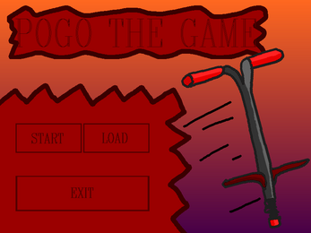
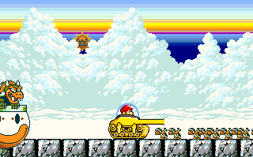
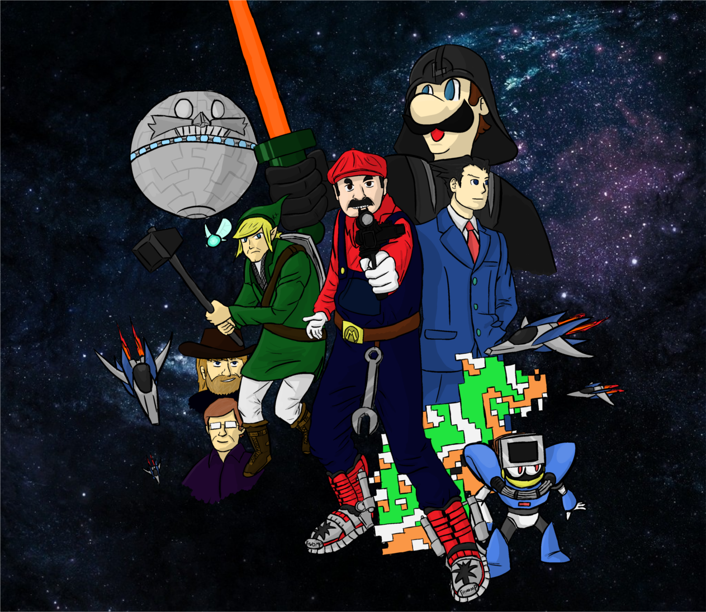
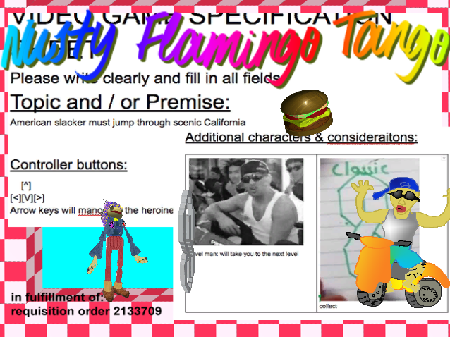
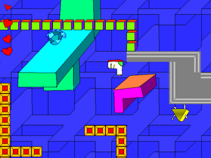
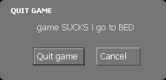

Interview with Durdge-o
from https://sushininja05.neocities.org/17.03.2018 1. Hello Durge-o, are you ready? Yea dude I have lots of hands for typing this. 2. You have recently released a game called "Pogo the Game", what inspired you to make it? Actually its a long story, I played a game by Magicdweedoo called "Ticket". Which inspired me to make games again, since I had already tried to make games while failing before. The game I started my "career" on was called "Project TV", it was meant to be a small platformer but it bloated in size and I didn't make games for awhile due to lazyiness. I started the idea for "Pogo The Game" cause I loved "Ticket" and wanted to see more games like it, but didn't know about the communities like glorious trainwrecks. Since I loved it so much, I started speedrunning it. Which only made me want to work on making games again. I took ideas from many games, and lifted assloads of mechanics from my canceled "Project TV" game.  POGO THE GAME 3. What was the most fun part of the creation of "Pogo", and what part was the most boring? The most fun was the first 5-6 hours, creating the game mechanics + the actual coding (that wasn't levels) was the most enjoyable thing ever. Since it is really fun getting set up. The most boring part was creating levels, due to my mechanics I had to create spacious levels. And the level development part of games is boring as fuck, so it was just a overall bad expierence. 4. Are there any good games that you would like to recommend? Good games? I play a lot of dumb games but here are some favorites: -Thingio: Side A (The inspiration for me even starting to make games in the first place. -A fun game with odd ideas and mechanics a stupid story that will have you smiling from ear to ear. As well as the plethera of secrets in the game, its just an enjoyable time altogether. https://mfgg.net/index.php?act=resdb¶m=02&c=2&id=5278 I urge you to play this game, it is my #1 pick for a game ever.  Thingio: Side A MFGG also has a lot of good fun games, so you should play some of the games on it too. https://mfgg.net/index.php?act=resdb¶m=01&c=2 -Nintendo Nightmare -An old game and odd game for sure, but very fun. I don't want to spoil the story, but if you love story based platforming adventure games this has got you covered. A bombastic story with amazingly stupid ideas that somehow makes it all work. The game sadly is very difficult and long, so if you aren't ready for a 3-4 hour expierence then It's not for you. https://gamejolt.com/games/neen-ten-doo-nightmare/185160  Nintendo Nightmare -Nusty Flamingo Tango ( A recent one, but still really good.) -A game with really no story, but an amazing art style and fun platforming. A dumb (in the good way) game all around that is worth playing if you enjoy games from Magicdweedoo or Glorious Trainwrecks. http://wetgamin.com/nusty.php  Nusty Flamingo Tango -Ticket ( Of Course) -This game blew me away and it shows me what people can do. It is an amazing game and I love the game, the game is good since it is a good game you should play it. Shut up and play it holy shit, this is the only game that you must pay for out of this list but it is beautiful.  Ticket by Magicdweedo 5. What games do you think really suck? If I were to put out a clearly hated game, I have only one answer. -Fortnite -An overall bad game that isn't very fun or skillful, it is annoying to play and does nothing but piss players off during the gameplay. If you enjoy the game, that is your choice. But fuck this game. If you want to play this game, do not there are better options that are similar. 6. What is your favorite weather? I gotta say: -Rain -A nice type of weather cause it looks nice. Other than that, my family often gets headaches during it. So I don't have to deal with them + sometimes I get days off due to headaches that run within the family. 7. It's riddle time... A man on a bike challenged an old guy on a bus - whoever gets to the nuclear bomb first, wins. But 30 minutes later, it was reported that both of them died in a concentration camp. What went wrong? Hmm, here my best """answer""". -This is a bus to a concentration camp, the man on a bike was forced into the bus with the man. The nuclear bomb sent by people to blow up the camp was defused, but not by either of them. Instead they were killed trying to stop the bomb from going off. 8. If you will make more games, what do you think you will make? Magicdweedoo. -I make whatever games I want, and what genre I tackle next is the one I go after when I want to make it. Just like magicdweedoo, who is the only reason I made games in the first place. 9. Your catchphrase  10. Final words? Assuming this is in the context of when someone is about to kill me: "you all are large fucking idiots" |